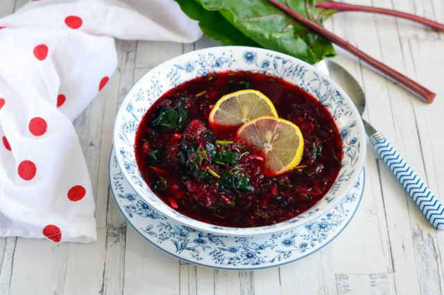

ООО "Русский дар" 
Вернутся в начальный раздел | Вернутся на главную страницу
Оборудование: нож, миска, холодильник, кастрюля, плита и ложка столовая.

Подготовьте необходимые ингредиенты для блюда. Для борща нужна молодая свежая свёкла с пышной ботвой. Если вы не выращиваете такую самостоятельно, на рынке во второй половине лета обычно можно приобрести такую свеколку.

Свекольную ботву отделите от корнеплодов. Жухлые и вялые листья удалите. Свеклу очистите от кожуры, разрежьте каждый овощ на 4 части.

Сложите четвертинки в кастрюлю, залейте 800 мл воды и отварите около 25-35 минут в зависимости от размера свеклы. Готовность свеклы проверяйте ножом или шпажкой. Варить свеклу стоит в стальной посуде, ни в коем случае не стоит использовать кастрюли из белой эмали, так как свекла быстро окрасит их в розовый цвет.

Картофель отварите в кожуре до готовности, очистите от кожуры и также натрите на терке или нарежьте мелкими кубиками.

Яйца отварите вкрутую, охладите, очистите, нарежьте мелкими кубиками или натрите на мелкой терке.

Огурцы также натрите на мелкой терке или нарежьте мелкими кубиками. Кожицу, если она не грубая, не повреждена и не горькая, срезать не нужно.

Готовую свеклу выньте из отвара.

Свекольную ботву хорошенько вымойте, отряхните от воды и опустите в горячий отвар, оставшийся после варки свеклы, и дайте постоять 5-7 минут. Делать это необязательно, особенно если ботва состоит из молодых и небольших листочков. У меня листья были очень крупные и жестковатые, поэтому их необходимо размягчить. Затем ботву выньте из отвара и встряхните. Можете опускать листья не в отвар, а отдельно залить кипятком.

Свекольную ботву и укроп мелко порубите.

Свекольный отвар охладите.

Тем временем натрите вареную свеклу на мелкой или средней терке.

В металлической кастрюле соедините подготовленные овощи, яйца и зелень.

Все посолите по вкусу.

Влейте к овощам охлажденный свекольный отвар. Все аккуратно перемешайте и поставьте в холодильник на 25-30 минут. Попробуйте блюдо на соль и при необходимости досолите. Вместо свекольного отвара можно использовать кефир или смесь кефира со свекольным отваром, тогда получится холодный борщ на кефире

Готовый борщ разлейте по тарелкам, добавив в каждую по ломтику лимона. А еще лучше - выжать сок из лимона прямо в тарелку. Как вариант можно вместо лимона положить половинки разрезанного вареного яйца и заправить сметаной. Приятного аппетита!

Шаг 1, Шаг 2, Шаг 3, Шаг 4, Шаг 5, Шаг 6, Шаг 7, Шаг 8, Шаг 9, Шаг 10, Шаг 11, Шаг 12,Шаг 13, Шаг 14, Шаг 15.